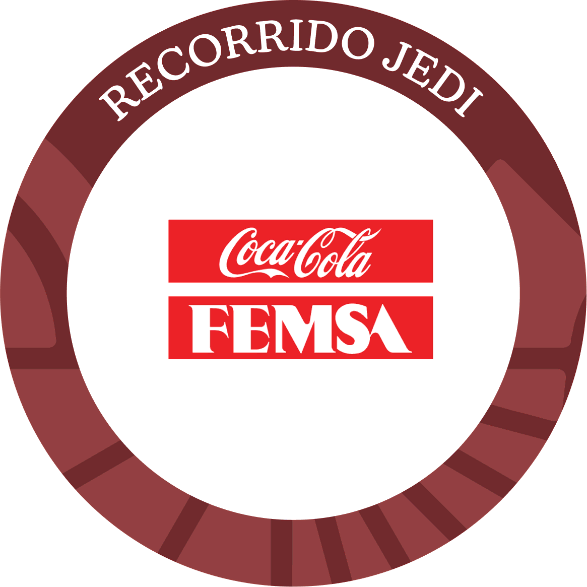
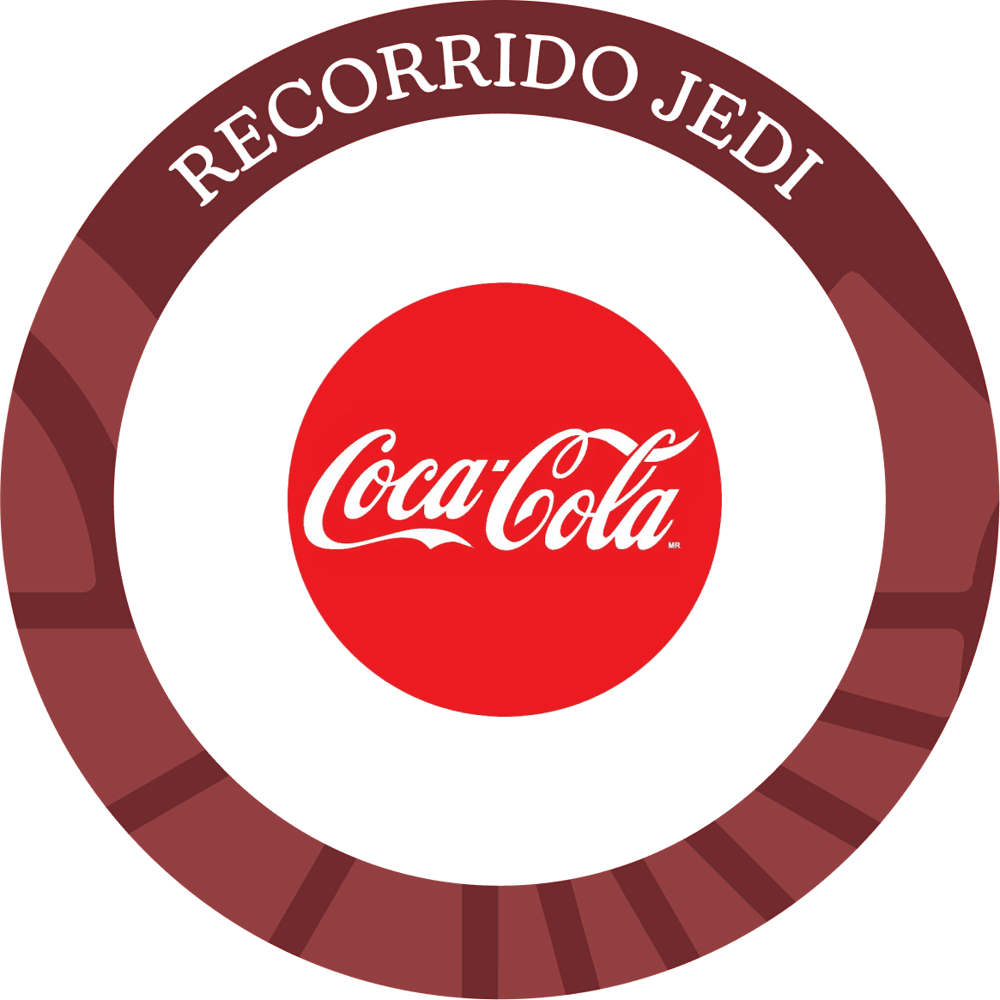
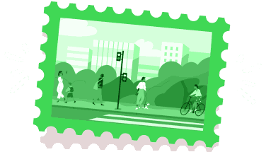
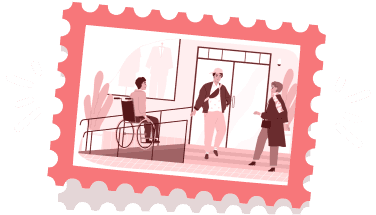
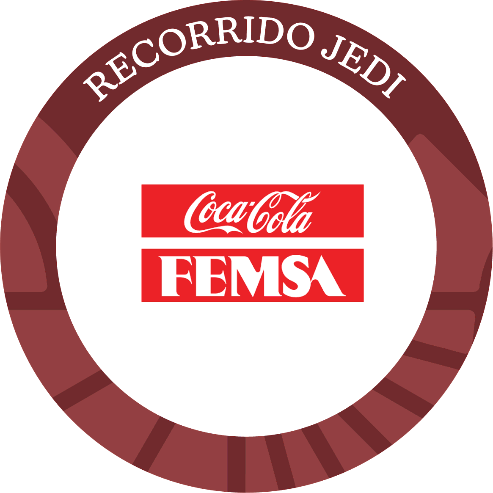
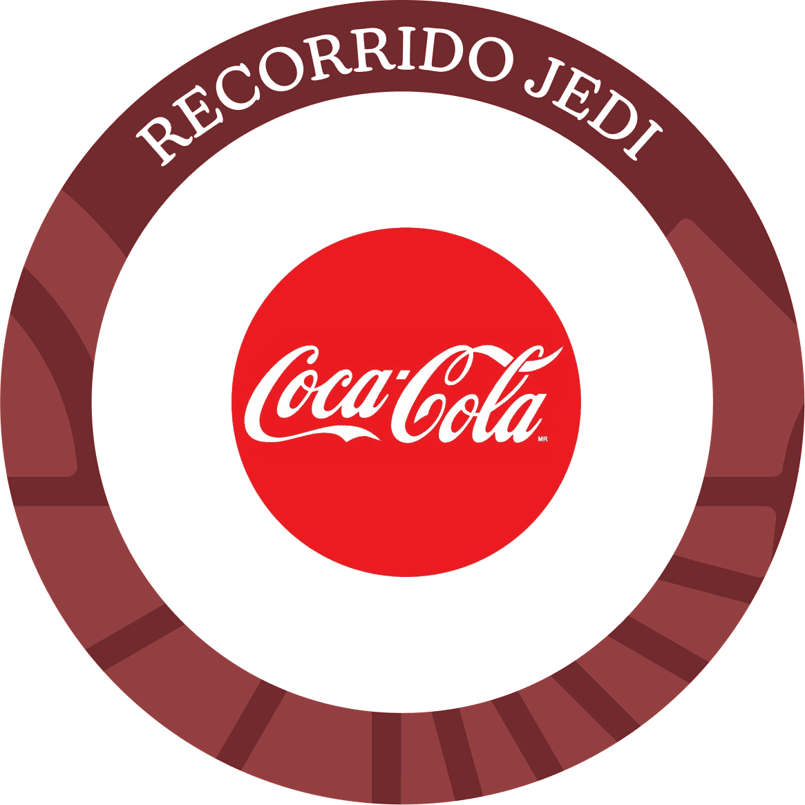
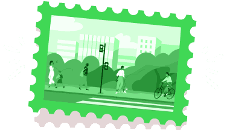
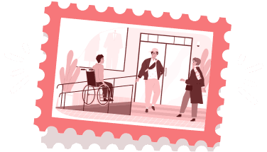

Pero espera, antes de comenzar, te recomendamos ver este video donde encontrarás consejos útiles y recordatorios para abordar los casos de manera efectiva. ¡Estamos seguros de que te convertirás en un experto en JEDI!
Práctica
de Actuación Inclusiva
¡Llegaste al último tramo del recorrido por el camino JEDI!
Como parte de tu recorrido, te enfrentarás a situaciones en donde podrás aplicar tus conocimientos sobre justicia, equidad, diversidad e inclusión. Volverás a visitar algunos establecimientos que ya conocías. ¡No olvides lo aprendido! Te servirá para recorrer este camino en constante evolución.


 
